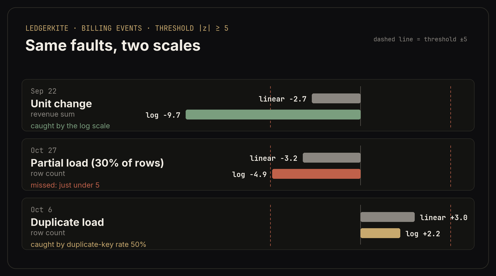
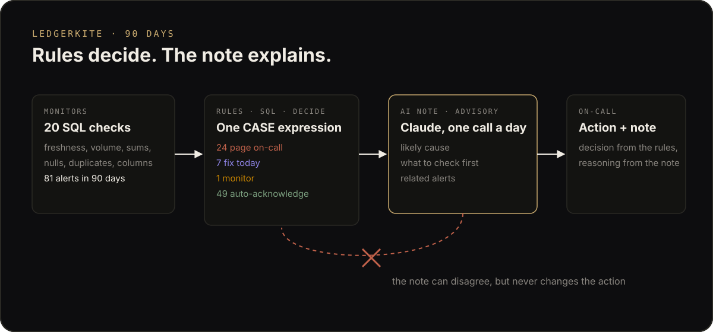
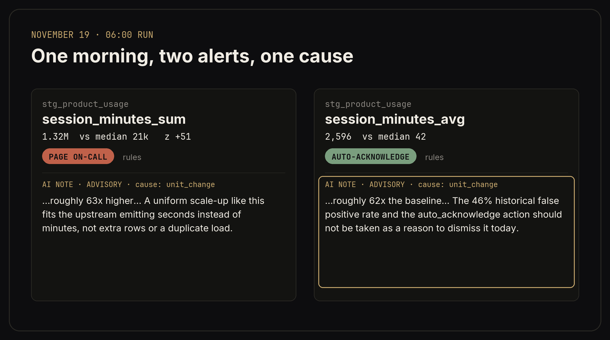

I planted 12 critical faults in a fake data pipeline, and my first set of monitors missed three of them. That number is the most useful thing the project produced, because almost nobody can measure it on their own monitoring.
A quiet monitor looks the same whether the data is fine or the check is blind. Unless you know where the faults are, you can't tell which.
- Most teams can't say how many real incidents their monitors miss.
- One statistics choice hid a revenue drop of 99%.
- AI alert notes earned their place, but not as the judge.
Ledgerkite is a fictional help-desk company and every number comes from a seeded simulation. The code is observability-on-a-budget and the live report shows every alert. It builds the system from my post 40 data alerts at 6am.
Plant the faults, then score the monitors
A fire drill works because someone knows there is no fire. Monitoring needs staged incidents too, so every alert can be marked right or wrong.
I wrote a generator for Ledgerkite's billing, usage and account files: 120 daily files per table, 30 days of warm-up, 90 monitored. Into those 90 days I planted 15 faults: late files, partial and duplicate loads, a renamed column, null spikes and two unit changes (cents sent as dollars, minutes as seconds). I added 5 benign calendar effects too, such as invoicing on the 1st and US Labor Day.
The monitors are plain SQL in dbt: 20 checks a day on freshness, row counts, sums and averages, null rates, duplicate keys and columns. Each check counts only rows that had landed by the 06:00 run, so a file arriving at 09:40 makes its table look empty, as on a real morning.
Why the first version missed three
My first scoring used a robust z-score: how far today sits from the median of recent days, in units of their typical spread (the median absolute deviation, MAD). Medians mean one bad day doesn't skew the baseline for weeks.
It still missed the September 22 unit change, when every amount arrived 100 times too small. Daily revenue swings a lot (a few large accounts billed on one day can triple it), and against a spread that wide a 99% drop scored only z −2.7.
Faults like this multiply a number rather than shifting it. A partial load multiplies row counts by 0.3, a duplicate load by 2, a unit change by 0.01. So I scored the logarithm instead, where multiplying becomes a fixed step, the same reason you judge a price change in percent rather than dollars.
WITH history AS (
SELECT
o.metric_name
, o.data_date
, MEDIAN(LN(1 + h.observed)) AS median_log
, MAD(LN(1 + h.observed)) AS mad_log
FROM observations AS o
INNER JOIN observations AS h
ON
o.metric_name = h.metric_name
AND h.data_date BETWEEN o.data_date - 56 AND o.data_date - 7
AND DAYOFWEEK(h.data_date) = DAYOFWEEK(o.data_date)
GROUP BY o.metric_name, o.data_date
)
SELECT
o.metric_name
, o.data_date
, o.observed
, (LN(1 + o.observed) - h.median_log)
/ GREATEST(1.4826 * h.mad_log, 0.08) AS z_score
FROM observations AS o
INNER JOIN history AS h
ON o.metric_name = h.metric_name AND o.data_date = h.data_date
The unit change moved from z −2.7 to −9.7. The query also compares each day with the same weekday over 8 weeks. Usage drops about three quarters at weekends, and that choice meant 4 false alarms instead of 75.
The duplicate load did not get better on a log scale. It got worse (+3.0 to +2.2), because doubling a quiet Tuesday still looks like a busy Tuesday. No scale fixes that. A duplicate-key check does, and it's the oldest test in dbt:
SELECT
event_date
, 1 - COUNT(DISTINCT event_id) / COUNT(*) AS duplicate_rate
FROM stg_billing_events
GROUP BY event_date
HAVING duplicate_rate > 0
On October 6 that rate was 50%: every row twice.

The miss I kept
I tuned two settings, the z threshold and a floor on the spread, using only the first 60 monitored days. The rule was fixed before I looked at the last 30: catch every fault in the tuning days, then the fewest false pages, then the lowest threshold. That gave a threshold of 5.
On the 30 held-out days it caught 5 of 6 faults. The miss is October 27, a partial billing load where 30% of rows arrived: z −4.9. Lowering the threshold to 4 after seeing that would catch it, and turn the score into a lie about the next fault.
The better fix is a control total: compare rows loaded with the count the source says it sent. A z-score knows what normal looks like; a control total knows what today should be.
Rules decide. The AI explains.
My triage post put its rules inside the LLM prompt: page if many models sit downstream and the monitor is rarely wrong, auto-acknowledge if an upstream table also failed. Every one of those rules is deterministic, like a hospital triage chart, so they belong in SQL, where they're free, testable and the same every morning.
CASE
WHEN severity = 'critical' AND NOT upstream_caused AND NOT likely_noise
THEN 'page_oncall'
WHEN (upstream_caused OR likely_noise) AND monitor <> 'schema'
THEN 'auto_acknowledge'
WHEN severity IN ('critical', 'high') THEN 'fix_today'
ELSE 'monitor'
END AS action
Of 81 alerts, the rules cleared 50 (61.7%) and paged 24. Seventeen pages were real faults. The other seven had no real fault behind them, and six of those were the month-start invoicing run, which a rule can't know about unless someone writes it down.
That gap is where the model earns its place. Each morning's alerts go to Claude Sonnet 5.5 in one request, so it can see that three alerts share one late file. It returns a likely cause from a fixed list, a note and one thing to check first, and never changes the action.

The notes named the right cause for 73 of 81 alerts (90.1%), and called all 7 false pages benign. The best one argued with the rules. On November 19 the noisy session-length monitor fired, and the rules auto-acknowledged it because that monitor is usually wrong. Its note said the average was about 62 times the baseline and that the monitor's 46% false-positive history should not be a reason to dismiss it. Minutes had started arriving as seconds.

The 8 misses were edge cases, mostly weekend dips read as a calendar effect and big billing days read as a possible unit change. Seven of those notes flagged their own evidence as thin.
All 52 alert days went in one Message Batch at half price: 94 seconds, $0.197, about a quarter of a cent per alert. My estimate said $0.145, because notes ran to about 250 tokens per alert, not 140.
Try this at work
Five changes, cheapest first
Already on Elementary? Its anomaly tests support seasonality: day_of_week; borrow only the rules and notes.
Takeaways
- Plant faults before you trust a monitor — a quiet check looks the same whether the data is fine or the check is blind.
- Score multiplicative faults on a log scale — the 100x unit change went from z −2.7 to −9.7.
- Some faults need an exact test, not a statistic — a duplicate-key rate caught the double load that every z-score missed.
- Tune on one period, report on another — the held-out miss is the honest number, and a control total is the fix.
- Deterministic triage rules belong in SQL — 61.7% of alerts were cleared for free, the same way every day.
- Let the model explain, never decide — notes caught all 7 false pages and one dismissed real fault for $0.20.
Sources and version notes
Checked on 2026-11-26.
- observability-on-a-budget: code, generator and results from one seeded run.
- Claude pricing: Sonnet 5.5 costs $2 / $10 per million input / output tokens, half on the Batch API.
- Message Batches: 50% of standard prices, most batches finish within an hour.
- DuckDB aggregate functions:
medianandmad(median absolute deviation). - Elementary seasonality:
day_of_weekcompares Mondays with Mondays. - dbt exposures: count the dashboards downstream of each table.
Which of your monitors would you bet on catching a file that arrives 100 times too small?